공화국의 마리안느와 자유-평등-박애
게시: 2018-12-13T06:30:00+09:00
이번에 노란조끼(gilets jaunes)라는 시위대가 파리를 뒤집어 놓으면서 개선문 안에 보관되었던 마리안느(Marianne)라는 여자의 두상도 크게 파괴었다고 해서 많은 사람들의 혀를 차게 했습니다. 특히 저 마리안느라는 여자의 표정이 몹시 화가 난 표정이라서 더욱 눈살이 찌푸려졌을 것입니다. 그러나 알고 보면 정작 마리안느 자신은 시위대가 자신의 두상을 과격 시위로 파괴한 것에 대해 그리 기분이 나쁘지 않았을 것입니다. 마리안느 자신이 바로 저항의 상징이기 때문입니다. 이 글은 2013년에 썼던 것인데, 이번 노란조끼 시위대 사건으로 약간 고쳐서 옮겨 왔습니다.
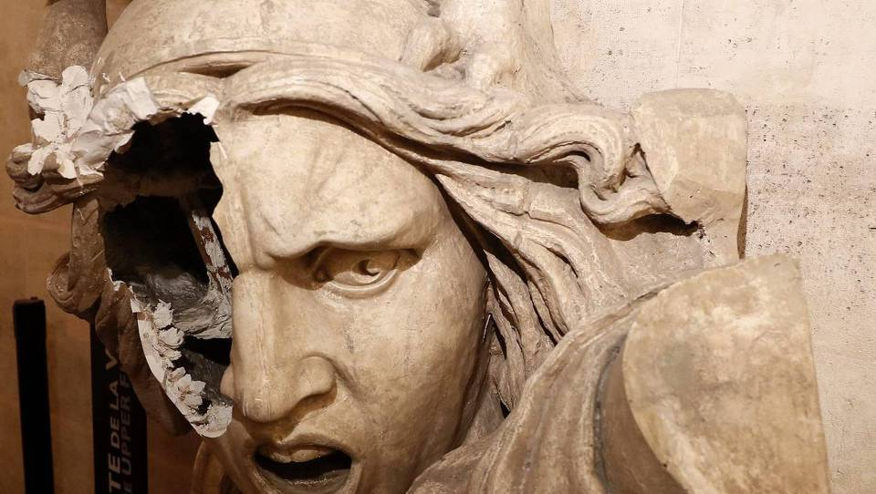
---------------------------
아래 사진은 제가 몇년 전 가을 파리 여행 갔을 때 찍은 노트르담 성당입니다. 그때 오전에는 루브르 박물관을 휘리릭 둘러본 다음이었던지라, 사실 다리가 무척 아픈 편이었고, 점심 때 들렀던 식당도 뭐 그다지 푸짐하거나 맛이 있지는 않아서 더욱 지친 상태였습니다. 게다가 비까지 추적추적 내리고 있었지요. 저희 가족은 루브르에서 생-제르맹 어쩌고 성당을 거쳐, 노트르담이 있는 시테 섬까지 그냥 걸어가고 있었습니다. 다소 처량하고 다리도 많이 피곤했습니다. 그런데, 막 노트르담에 도착하자 거짓말처럼 날씨가 개면서 파란 하늘과 밝은 햇살이 나오더군요. 게다가 노트르담은 어찌나 멋있던지 !
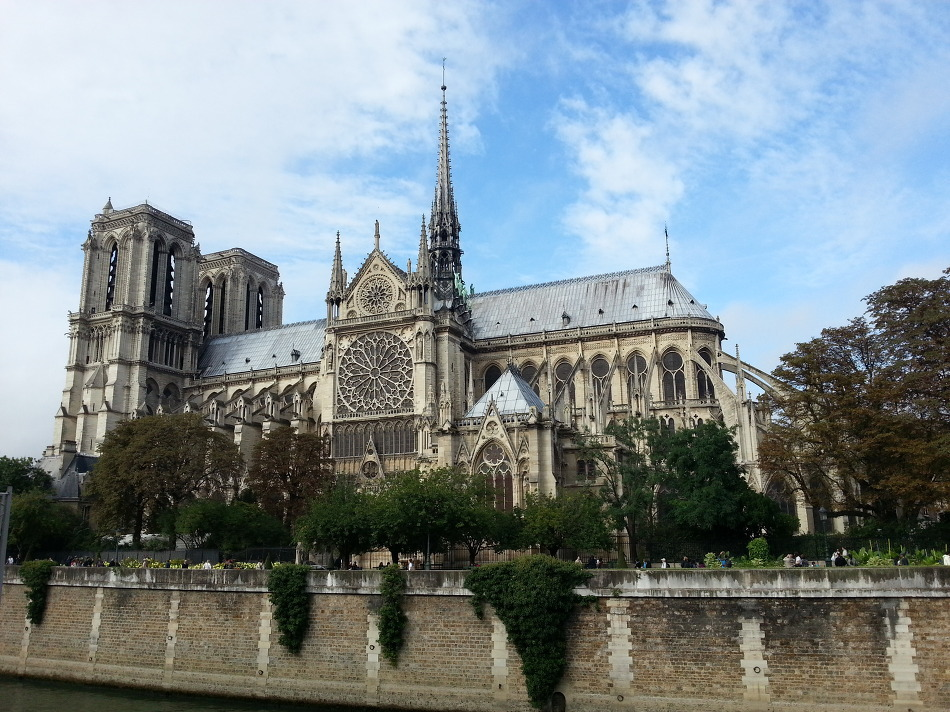
(노트르담은 앞쪽도 멋있지만 옆쪽과 뒤쪽은 더 멋있던데요 !)
그런데 시테 섬으로 들어가는 퐁뇌프 (Pont Neuf, 새 다리) 교를 건너자 마자 뭔가 커다란 관공서 같은 건물이 나오더군요. 이 건물은 Cour de Cassation, 즉 파기법원으로서, 우리나라로 치면 대법원에 해당하는 기관입니다. 뭐 그리 대단한 예술적 건축물로 보이지는 않아서 그냥 지나쳤는데, 그 앞을 지나다 보니 작은 출입문 위에 새겨진 문구가 눈에 들어와 사진을 찍게 되었습니다. 바로 Liberté, Egalité, Fraternité 입니다.
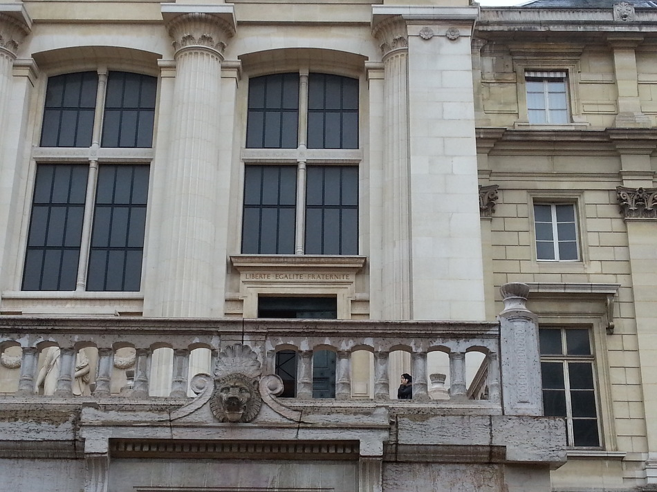
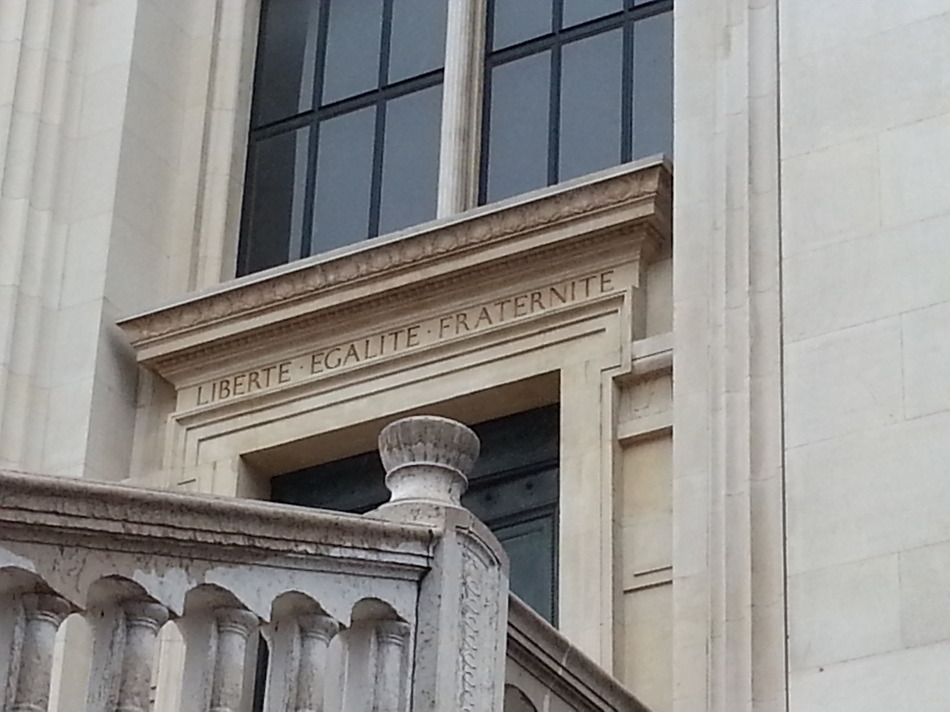
(저처럼 눈이 침침하신 분들을 위해 확대 사진도 하나 추가했습니다.)
프랑스 대혁명만큼 프랑스 정치와 역사에 강렬한 인상을 준 사건이 없을 정도로, 1789년의 혁명은 대단한 의미를 가집니다. 제가 연재하는 나폴레옹 이야기도 그 부산물에 불과하다고 할 수 있습니다. 나폴레옹 본인은 자신의 쿠데타로 인해 혁명은 끝났다라고 선언한 바 있지요. 즉, 나폴레옹의 생각으로는 프랑스 혁명 기간은 1789년 바스티유 요새 습격 사건부터 1799년 브뤼메르 쿠데타까지의 10년 간이었습니다. 하지만 많은 역사가들은 이에 동의하지 않습니다. 프랑스 대혁명은 10년이 아니라, 약 100년 간 진행되었다는 것이지요. 이들의 이야기에 따르면, 프랑스 혁명은 1870년 제3 공화국(La Troisieme Republique, La IIIe Republique)의 성립 때 되어서야 비로소 완성이 되었다고 하는 것입니다. 그 사이에 일어났던 많은 사건들, 즉 나폴레옹의 제1 제국, 부르봉 왕가의 복위, 7월 혁명, 루이 필립 왕정, 2월 혁명에 의한 제2 공화국, 나폴레옹 3세의 제2 제국, 그리고 1870년 보불 전쟁의 뼈아픈 패배는 모두 프랑스 대혁명의 진통이었던 것이지요.
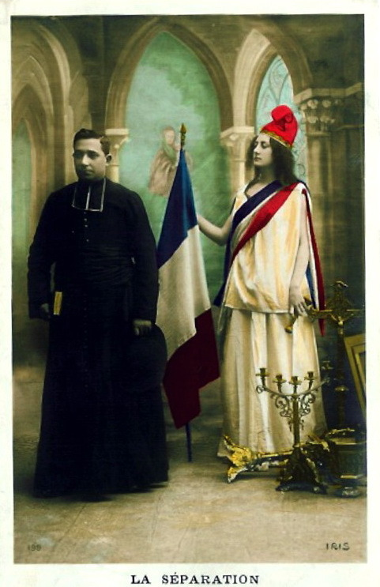
(프랑스 제3 공화국의 업적 중 하나는, 나폴레옹도 이루지 못했던 정교 분리를 1905년에 마침내 이루어냈다는 것입니다. 이 그림에서 카톨릭 신부에게 이별을 고하는 '빨간 고깔모자를 쓴 삼색기의 여인'이 바로 마리안느 Marianne, 즉 프랑스 공화국을 의인화한 캐릭터입니다.)
어떤 사람들은 이렇게 혁명의 혼란 속에서 19세기를 보낸 덕분에 프랑스가 과거의 영광을 모두 잃고 영국이나 독일에 비해 크게 암울한 20세기를 맞게 되었다고들 합니다. 사실 제 세대는 학교 교과서에서 대략 그렇게 배웠습니다. 실제로 그런지도 모르겠습니다. 19세기 동안 독일이나 영국의 인구가 크게 증가할 때, 유럽의 인구 대국이었던 프랑스의 인구 증가율은 크게 정체된 편이어서, 이 현상 자체가 하나의 연구 과제가 될 정도였는데, 일부에서는 19세기 프랑스의 정치 혼란이 그 원인이라고 탓하기도 합니다. 물론 반대론도 많지요. 하지만 프랑스가 19세기의 혼란기를 겪어나가면서, 국가적으로 얻은 것이 있습니다. 바로 저 파리 대법원의 작은 출입문 위의 새겨진 Liberté, Egalité, Fraternité 입니다.
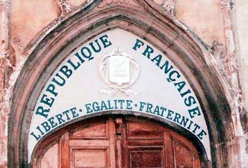
(이건 정부 소유의 어떤 교회 문위에 새겨진 자유-평등-박애입니다.)
자유와 평등에 대해서는 다들 익숙하실 텐데, 정작 저 3번째의 Fraternite에 대해서는 다소 생소한 느낌이 드실 것입니다. 이는 영어로도 fraternity이고, 형제 관계, 형제애, 동포애, 남학생클럽 등의 의미를 가집니다. 저는 이걸 그냥 '박애'라고 번역합니다. 이 '박애'에 대해서는 생소한 느낌이 들 수 밖에 없는 것이, 이것이 프랑스 혁명의 원래 모토가 아니라 훗날 정립된 것이었기 때문입니다. 프랑스 혁명 초기부터 리베르테와 에갈리테, 즉 자유와 평등에 대해서는 워낙 이야기가 많이 되었지만, 세번째 모토는 처음부터 명확히 프라테르니테라고 정의가 되지 않았고 다른 개념이 대신 끼어들기도 했으며, 어떤 때는 그냥 자유와 평등만 이야기가 되었습니다. 자유와 평등에 대해서는 그에 대한 정의도 1789년의 인권 선언 (Declaration des droits de l'homme et du citoyen)에 다음과 같이 내려져 있었습니다.
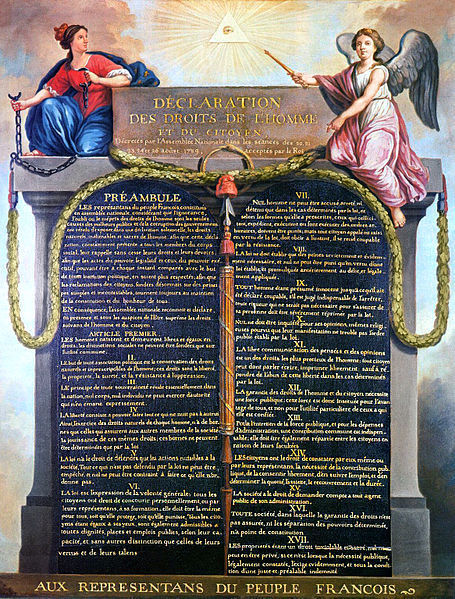
(맨 처음 이 글을 썼던 것이 2013년이었는데, 지금은 촛불 혁명 거치면서 우리나라도 많이 개선이 되었나요 ?)
"자유란 다른 사람들에게 해를 끼치지 않는 한 그 무엇이라도 할 수 있는 권리를 뜻한다. 사회의 다른 구성원이 같은 권리를 누리는 것을 보장하는 한, 모든 남녀가 타고난 권리를 누리는 데 아무런 제약이 없어야 한다."
"평등이란 법이 모든 사람에 대해, 그것이 보호이건 처벌이건, 동일하게 적용되는 것을 뜻한다. 모든 시민들은 법 앞에 평등하며, 모든 시민들은 그들의 능력에 따라 고위 관직 및 공직, 일자리에 있어 동일한 기회를 가지며, 그들의 덕성과 재능 외에는 어떠한 차별도 받아서는 안된다."
사실 자유와 평등이라는 것은 서로 양립하기가 조금 아리송한 개념이기는 합니다. 애초에 인간은 평등하지가 않습니다. 외모이건 신체적 능력이건, 그리고 특히 지적 능력과 사업 수완에 있어서 많은 차이가 납니다. 이런 소양 차이는 필연적으로 성과의 차이를 만들어낼 수 밖에 없으므로, 어떤 사람은 부와 권력을 손에 쥐게 되고, 어떤 사람은 가난과 불명예을 얻게 되는 것입니다. 평등이란 결과의 평등이 아니라, 기회의 평등이자 법 앞의 평등이라는 개념이었던 것이었습니다. 프랑스 대혁명의 사상을 주도한 세력은 18세기 말의 계몽 사상에 기반을 둔 유식하고 능력있는 부르조아 계층이었으므로, 이들에게는 귀족이라는 특권 세습 신분의 타파만 중요했습니다. 그런 특권만 제거된다면 부와 실력을 가진 자신들의 세계가 펼쳐질 거라는 자신감이 있었던 것이지요.
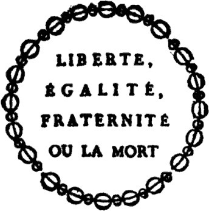
(프랑스 혁명 초기에 나온 자유-평등-박애 문구입니다. 밑에 달린 ou la mort는 "아니면 죽음을" 이라는 다소 과격한 구호입니다. 이 죽음 부분은 너무 과격하다고 하여 테르미도르 반동 이후 없어졌습니다.)
하지만 자유라는 개념은 무척 난해한 것입니다. 원래 자유로우려면 경제적인 독립성이 먼저 확립이 되어야 합니다. 생각해보십시요. 자신과 가족의 생계가 어떤 권력자에게 달려있다면, 자신이 그 권력자로부터 자유로울 수 있겠습니까 ? 따라서 최소한의 경제적 자립이 없는 자유는 허울 좋은 개살구일 뿐입니다. 가령 산업 혁명 당시 맨체스터 공장 지대의 일용 노동자는 명색은 자유인이지만 정작 미국 남부 흑인 노예보다 더 나은 삶을 살았다고는 볼 수 없습니다. 그러다보니, 가난한 사람들에게 최소한의 경제적 지원이 없다면 자유라는 것은 의미가 없어지게 되었고, 그렇게 가난한 사람들에게 도움을 주려다보니 부자들로부터 더 높은 세금을 걷는 등 남의 자유를 빼앗는 결과가 나오게 된 것입니다. 가령 최저 임금제라는 것을 생각해 보십시요. 제가 당장 라면이라도 끓여먹기 위해 한달에 50만원이라는 박봉으로라도 좋으니 어떤 공사장 경비원 자리를 구하고 싶은데, 국가가 (도와줄 것도 아니면서) 최저임금 이하의 금액으로 고용 계약을 맺는 것은 불법이라고 이 고용 계약을 취소한다고 하면, 저와 그 고용주가 서로의 사정에 따라 계약을 맺을 자유를 국가가 빼앗는 것이 됩니다. 또, 자유 민주주의 국가에서, 대기업은 두부를 만들어 팔면 안된다 라든가, 대기업의 대형 마트는 일요일에 영업을 하면 안된다 라는 것이 이치에 맞는 일인지에 대해서는 논란이 있을 수 밖에 없습니다.
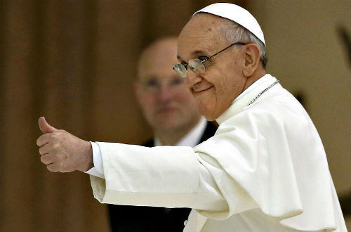
(제가 로마 방문했을 때 멀리서라도 뵐 기회가 없었던 프란체스코 교황입니다. 당시 현지 가이드 이야기를 들어보니, 로마 현지에서나 전세계에서나, 전임 베네딕트 교황에 비해서 인간미가 넘치고 약자에 대한 배려를 우선시하여, 인기가 폭발적이라고 하더군요. 프란체스코 교황은 최근에 '규제받지 않은 자본은 또 하나의 독재'라는 발언을 하여 특히 미국의 보수파 (자칭 신자유주의파)로부터 비난을 받았고, 급기야 교황이 '나는 마르크스 주의자가 아니다'라는 해명 발언까지 해야 했습니다. 전세계적으로 종북 빨갱이몰이는 공통된 현상인가 봅니다.)
이렇게 자유와 평등은, 경제적 문제에 들어가게 되면 정말 양립하기 어려운 개념입니다. 하지만 여기에 제3의 구호, 박애라는 개념이 들어가게 되면 이야기가 좀더 원활하게 돌아갈 수 있습니다. 저 자유와 평등은 기본적으로 개인의 문제인 것에 비해, 박애라는 개념은 행복한 사회를 만들기 위한 기본 전제이기 때문입니다. 모든 인간은 홀로 살 수 없습니다. 아무리 뛰어난 개인이라고 할 지라도, 그 능력을 발휘하기 위해서는 다른 '별로 안 뛰어난' 개인들로 이루어진 사회가 필요합니다. '내가 혼자 잘나서 이렇게 부를 이루었는데, 왜 내가 무능력한 가난뱅이들을 지원하기 위해 고율의 세금을 내야 하느냐'라고 묻는 것은 기본적으로 맞지 않는 이야기입니다. 사람의 부나 돈이라는 개념은 홀로 있는 무인도에서는 아무런 의미가 없고, 오직 다른 평범한 사람들과 함께 사는 사회에서나 의미를 가지는데, 사람의 사회라는 집단에는 항상 가난한 사람들이 있기 마련이거든요. 박애라는 개념은 같은 피가 흐르는 같은 영장류 동물로서, 당연히 동족에게 가져야 할 최소한의 연민과 사랑이지요. 결국 자유와 평등이라는, 서로 상반되는 개념을 묶어주는 접착제 역할을 해주는 것이 박애라고 저는 저 나름대로 정의를 합니다.
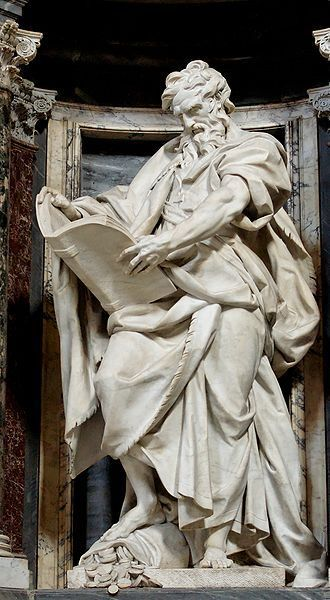
(바티칸에 있는 4대 복음서 저자 중 한명인 마태 Matthaeus의 석상입니다. 마태가 기록한 예수님 어록에 아래와 같은 말이 있지요. 저는 전에 어느 분의 장례 미사에 갔다가, 신부님이 읽어주시는 이 글귀를 듣고... 감동도 좀 먹었지만 사실 좀 무섭기도 했습니다. 저는 정말 지옥에 갈 죄인이구나 하는 생각이 들어서 그랬지요. 세상에 어려운 처지에 빠진 사람들이 이렇게 많다는 것을 뻔히 알면서도 제 가족의 행복과 안녕이 더 급하고 더 귀하기 때문에 기부도 많이 안 하는 편이거든요. 아마 그때부터였나... 저는 복지를 위한 중과세에 적극 찬성하는 사람이 되엇습니다.
마태복음 25장 41~45절
또 왼편에 있는 자들에게 이르시되 저주를 받은 자들아 나를 떠나 마귀와 그 사자들을 위하여 예비된 영영한 불에 들어가라
내가 주릴 때에 너희가 먹을 것을 주지 아니하였고 목마를 때에 마시게 하지 아니하였고
나그네 되었을 때에 영접하지 아니하였고 벗었을 때에 옷 입히지 아니하였고 병들었을 때와 옥에 갇혔을 때에 돌아보지 아니하였느니라 하시니
저희도 대답하여 가로되 주여 우리가 어느 때에 주의 주리신 것이나 목마르신 것이나 나그네 되신 것이나 벗으신 것이나 병드신 것이나 옥에 갇히신 것을 보고 공양치 아니하더이까
이에 임금이 대답하여 가라사대 내가 진실로 너희에게 이르노니 이 지극히 작은 자 하나에게 하지 아니한 것이 곧 내게 하지 아니한 것이니라 하시리니)
이런 자유-평등-박애의 구호는 그냥 막연히 떠드는 구호는 아닙니다. 근 100년 간의 혁명을 거치면서 프랑스 사회가 내린 결론이지요. 이 구호는 1870년 이후 성립된 프랑스 제3 공화국에서 국가 이념으로 내세우면서 확실히 정립이 되었고, 1880년 이후 지어지는 관공서 등의 건물의 박공 등에 이 문구를 새겨 놓도록 했습니다. 그래서 저도 이번 파리 여행에서 시테 섬의 파기법원 출입문 위에 새겨진 저 문구를 볼 수 있었던 것입니다.
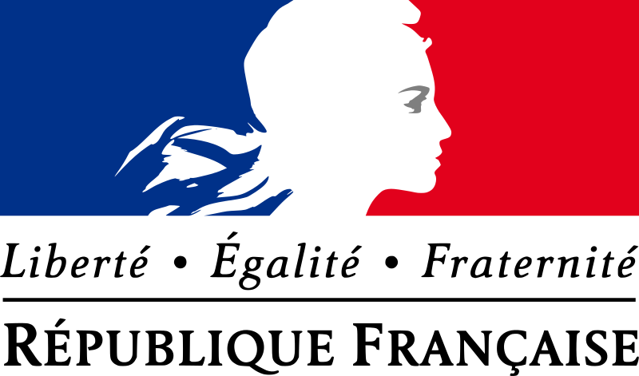
(국가 이념을 저렇게 정한다고 정말 저렇게 되는 것은 아닐지라도, 최소한 저렿게 이념이라도 정한다는 것이 얼마나 대단한 것인지요!)
저는 그때 꽤 지치고 (비까지 와서) 처량한 기분이었으나, 저 문구를 보고 괜히 저혼자 흥분했었어요. 그래서 별로 관심도 없고 잘 알아듣지도 못하는 우리 애에게 저 문구의 의미를 설명해주려고 막 떠들다가 핀잔만 들었지요. 하지만 프랑스 정부는 저 구호의 가치를 국민들에게 심어주는데 무척 많은 관심을 가지고 있습니다. 이 자유-평등-박애의 상징은 프랑스 곳곳에서 자주 눈에 보입니다. 프랑스 공화국을 상징하는 마리안느(Marianne)라는 여자의 모습과 프랑스 삼색기와 함께, 이 구호는 마치 프랑스와 불가분인 것처럼 지금도 외쳐지고 있지요. 프랑스의 학생들은 어릴 때부터, 프랑스의 국가 이념이 바로 이 Liberté-Egalité-Fraternité라는 것을 반복해서 배운다고 합니다.
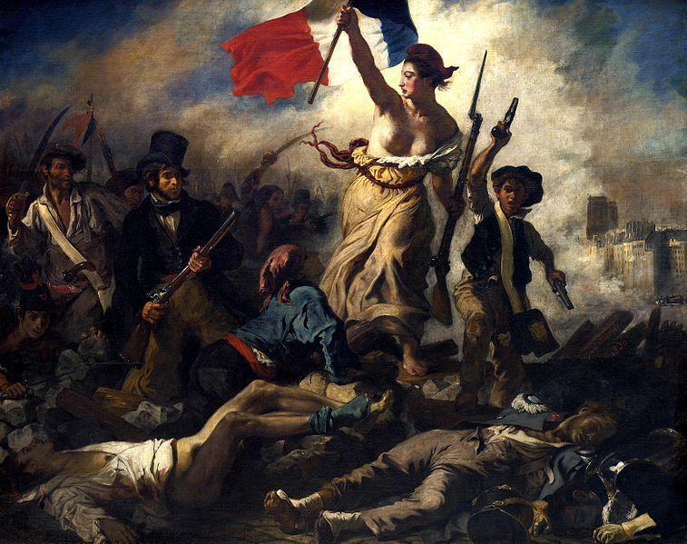
(프랑스 공화국의 마리안느는 결코 청순가련형의 순종녀가 아닙니다. 자유와 평등을 침탈당할 때는 저렇게 총검을 손에 들고 민중을 이끄는 행동파입니다.)
전에 프랑스 국가 라 마르세예즈에서 쓰면서 이렇게 '독재자의 깃발이 올랐다 시민들이여 무기를 들라 !'라는 가사를 국가 의례 때마다 부르는 나라에서는 독재자가 자리잡기 어렵겠다는 이야기를 쓴 적이 있었지요. 같은 맥락에서, 부유층의 수퍼카와 호화 요트에 대한 세금은 없애면서 서민들의 연료비에 대한 세금은 높아지는 현실을 접했을 때, 학교에서 에갈리떼(Egalité)와 총검을 든 마리안느에 대해서 배우는 나라의 국민들이라면 노란 조끼(gilets jaunes) 시위를 통해 파리를 뒤집어 놓는 것이 충분히 이해 가능하다는 생각이 듭니다.